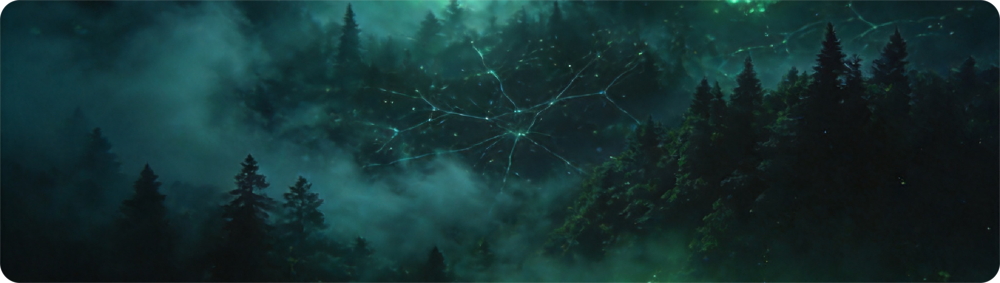
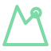

SOFTWARE & AI ENGINEER · 软件与人工智能工程师
在代码与智能之间，造一片绿野
我是 Ron567，软件工程师 & AI 工程师。这里收录我的开源作品、技术随笔与实验——关于工程，关于智能，也关于如何把复杂变简单。
向下，进入我的世界

ABOUT · 关于我
我是 Ron567
我是一名软件工程师，也是 AI 工程师。每天和代码、模型，以及无数个「为什么跑不通」打交道。比起堆功能，我更在意系统是否优雅、是否让人用得舒服。
这个博客，是我留给技术的私人笔记——没有术语堆砌，只有踩过的坑、想通的问题，和偶尔被一段好代码击中的瞬间。
后端架构
机器学习
开源
技术写作
系统设计

Ron567 · 软件 & AI 工程师WORKS · 作品 · 随笔
把思考，做成作品


OPEN SOURCE · 开源项目
在 GitHub 上耕耘
正在加载项目数据…
WRITING · 技术随笔